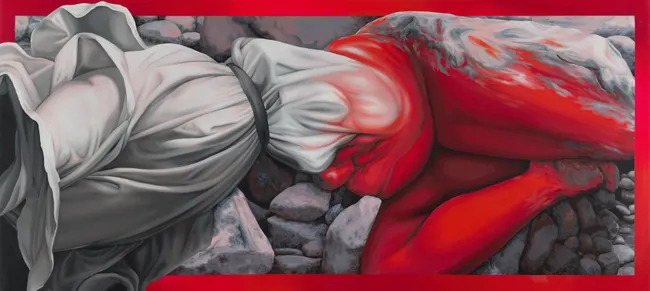

I Dream I Cross the River in One Stride
Mariane Ibrahim is pleased to present I Dream I Cross the River in One Stride, a group exhibition that gathers the work of Clémence Gbonon (b. 1994), Brittney Leeanne Williams (b. 1990) and Autumn Wallace (b. 1996).
I Dream I Cross the River in One Stride takes Lorraine O’Grady’s foundational essay Olympia’s Maid: Reclaiming Black Female Subjectivity as a point of departure. If, as O’Grady argues, the Black female body has long functioned as the unseen reverse side of Western femininity—present as stereotype, absent as subject—these artists reclaim their right to explore an image that is self-authored, multiple and unafraid of its own excess.
Across their practices, from painting to sculpture, Williams, Wallace, and Gbonon refuse old dichotomies and instead inhabit a “both/and” space as articulated by O’Grady: sensuous and thoughtful, wild and monumental, intimate and vulnerable, queer and undefined. In their works, bodies bend, double, look back, and sometimes even melt or withdraw from our gaze, asserting that subjectivity is not granted by the viewer but claimed from within. The body no longer stabilizes someone else’s image; it sets the terms of its own existence.